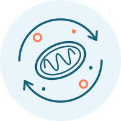
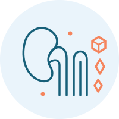

Metabolic healthHow the body uses energy
Explore the metabolic changes associated with PKD and the nutrition strategies being studied to address them.
Focus: cellular energy and metabolic pathways

Ren-Nu™ bbrings together nutrition and lifestyle education informed by research to support kidney health, metabolic well-being, and quality of life.
Ren-Nu™ brings nutrition an lifestyle education together with a medical food, imformed by research into metabolic health and kidney stressors.

Metabolic healthExplore the metabolic changes associated with PKD and the nutrition strategies being studied to address them.
Focus: cellular energy and metabolic pathways

Kidney stressAddressing factors that may contribute to kidney injury, including microcrystal formation and the urinary conditions that influence it.
Focus: citrate, urinary pH, and crystal-forming compounds
103 participants analyzed 3-month intervention Published in Frontiers in Nutrition
Average estimated kidney function increased during the program.
Participants reported lower symptom scores.
Use of blood-pressure medication decreased.
Average BMI decreased among participants with available data.
Observational findings; no separate control group. Data availability varied by outcome.
Individual results vary. Medication changes require physician guidance.
Explore the evidence, from foundational discoveries to clinical studies.
Newest first within each category.
Real-world outcomes in people with ADPKD.
Long-term observations of cyst progression and kidney growth.
Examining ketosis and kidney-volume changes.
Feasibility and impact of nutritional interventions.
Patient-reported feasibility, safety and effects.
Testing the combination in a rat model of PKD.
Investigating metabolic mechanisms in animal models.
Exploring crystal deposition and cyst formation.
The framework and principles behind the program.
Reviewing mechanisms of ketone-related kidney protection.
Factors that may influence disease progression.
Reviewing the evidence in kidney disease.
A perspective on metabolic therapy in kidney disease.
Display titles abbreviated for readability.
Resources →
Research continues across clinical settings in Japan, the United States, and Australia.
People with ADPKD have taken part in the Ren-Nu™ program.
An adapted Ren-Nu™ program with a medical food.
3-month and 12-month reports listed in the research summary.
A 16-week evaluation of the Ren-Nu™ program with a medical food.
20 participants.
A 3-month evaluation of a medical food with a low-carbohydrate/ketogenic diet.
Study summaries based on the supplied research update. Interim findings are preliminary.

The Ren-Nu program is more than a dietary intervention. It's a pathway to empowering patients with polycystic kidney disease. By incorporating scientifically-backed nutritional strategies like a ketogenic approach, we've seen significant improvements in kidney function and overall health. This program offers hope and a real chance to slow the progression of PKD, as demonstrated by both clinical results and participant outcomes.
Research tells part of the story. Program participants tell the rest. Hear how they changed their lab results, their energy, and their confidence in managing PKD.
Experiences vary by individual. Ren-Nu™ is an educational program designed to support informed lifestyle changes.
Join the Ren-Nu™ program and start your journey to better kidney health, with structured education, personalized guidance, and a community that understands PKD.